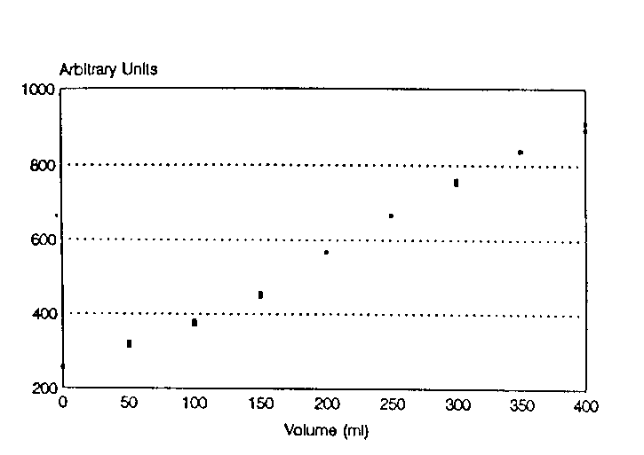

PRACTICAL USE 0F NMR: VOLUME MEASUREMENT OF FI.OWING WATER MIXED WITH AIR
(received 10/14/92)
Dear Professor Shapiro,
Following in the footsteps of others, including Southwest Research Institute's efforts such as tractor driven NMR for soil water measurement, dynamite detector for checked airline baggage, etc, we applied NMR to another practical problem, i.e., the determination of total volume of wafer that flows for a well defined event. This was prompted by NASA's need to make such a measurement in a gravity-less spacecraft. There, the flow is characterized by variable mixture of air and water and the water will have a time dependent velocity distribution. The total volume of flow will be in the range of 100 to 1000 ml over times of the order of 15 to 30 seconds We called this study "Project-P."
Our idea was to use proton NMR and accumulate signals from prepolarized protons passing through a measurement "window" in such a way that all protons are counted only once We applied a train of p /2 pulses with separation t where vmaxt <L for window width L and maximum velocity vmax. In these experiments, t =20 ms and L=9 cm. The FID was sampled once after each rf pulse and the signals accumulated in the computer. In order to avoid echoes from the successive p /2 pulses, we applied pseudorandom crusher gradient pulses, i.e., uniform duration but variable strength intensity values of a single gradient component, between the p /2pulses. The effectiveness of the crushers was checked by applying the pulse sequence to a static sample in the window and minimizing the FID amplitudes after the first FID. The small residual signal will be the upper limit to the signal from the slowest moving spins in the flow experiment.
We performed the study in a 1.9/31 Oxford horizontal bore magnet with a Nalorac Quest 4300 NMR imager/spectrometer. The flow system consisted of a 1/4 inch i.d. plastic tubing connected to house vacuum through a phase separator made out of a 2 liter flask. Measured volumes of tap water was poured into a funnel at the input end and any amount of air could be included in the flow by adjusting the way the water was poured. Approximately 12 feet of tubing was coiled inside the bore, upstream of the test section, to provide sufficient nuclear polarization. The test section war defined by two copper foils wrapped around the tubing.
The figure at right shows the total signal as a function of volume of water passed through the system There are two points at each flow volume representing results of two independent runs where no efforts were made to pour the measured volume of water in the same way The repeatability ranged from ± 1.7% at small flows to ± 0.7% at the fastest flows so that, despite the slight nonlinearity of the data, this plot can be used as calibration to extract accurate flow volumes.

For an actual airborne device, a suitable single-purpose instrument would have to be designed to minimize weight and power consumption. A combination of narrow band rf electronics and special purpose permanent magnets (of around 0.5T field) made of neodymium-iron-born could keep the weight down around 60 pounds. The heaviest component is the prepolarizaton magnet which probably should be a separate unit because of its lack of stringent field homogeneity specifications. The NMR magnet could be a separate unit because of its lack of stringent field homogeneity specifications. The NMR magnet could be a tubular dipole magnet in which N segmented magnets are arranged so the magnetization direction is rotated by 4p /N from one segment to the next [K, Halback, Nucl. Instrm. Methods 169, 1 (1980)]. No iron is needed because the return path of the field will be inside the magnet.
There is a perception out in the real world that most of NMR is imaging as used in clinical medicine. This example demonstrates the versatility of non-imaging NMR for "lowbrow" practical uses. This work was carried out for NASA, in collaboration with Lovelace Scientific Resources, by Steve Altobelli, Arvind Caprihan, Jerry Davis, Eiichi Fukushima, Jasper Jackson, and Hans Petersen.
Sincerely,
Eiichi Fukushima